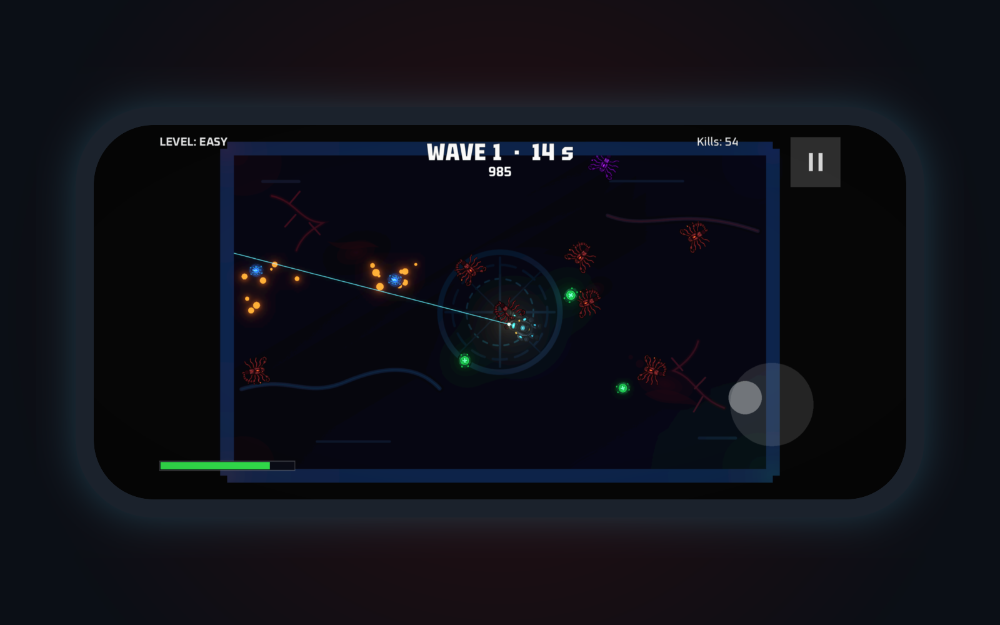
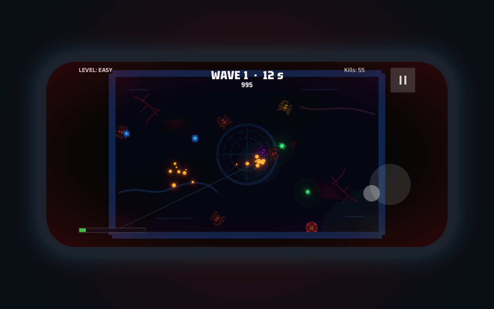
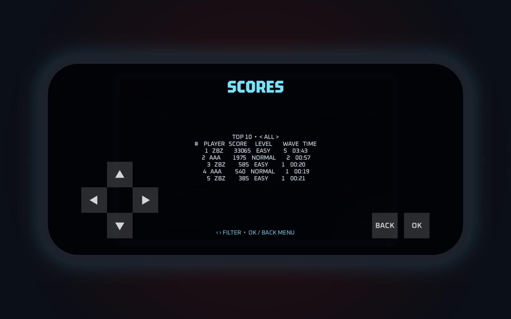

How to publish:
1. LinkedIn → Write article → upload 00_cover.png as the cover.
2. Copy the title below into the Title field.
3. Select the text from "What it is" down to the hashtags, copy it and paste it into the article body.
4. Replace each blue image box with the named image (＋ icon → Image).
5. Replace <APP_STORE_LINK> with the App Store link.
PHOBOS Survivor: a twin-stick survival shooter for iPhone and iPad
What it is
PHOBOS Survivor is a fast twin-stick shooter about surviving on a single enclosed arena. Alien organisms pour in from every side in waves, and each wave is faster and bigger than the last. The goal is simple: survive longer than last time and beat your best score.
📷 IMAGE: 01_gameplay.png

Controls made for touch
- Left thumb moves your exoskeleton, right thumb aims and fires
- Movement follows the latest direction of your thumb, so you can turn with a short stroke without looking at the stick
- Gentle aim assist helps you hit targets during quick thumb movements
- Prefer a gamepad? DualSense, Xbox and other iOS-compatible controllers are supported, but never required
📷 IMAGE: 02_aiming.png

Gameplay
- Waves of increasingly dangerous enemies with a visible, glowing core
- Green capsules restore health, blue reactors briefly boost your fire rate
- Three difficulty levels, from a relaxed run to a real challenge
- Local TOP 10 leaderboard with initials and a difficulty filter
📷 IMAGE: 03_scores.png

Look and sound
A bio-industrial horror style: a dark metal arena overgrown by organic forms. The music is generated procedurally by the game and builds up with the pressure on the arena.
No strings attached
- Free, with no ads and no in-app purchases
- No account and no data collection
- Plays fully offline
Languages
English and Polish. The game follows your device language.
Behind the game
PHOBOS is built with the open-source Godot engine. The same repository also contains retro ports for the Amiga 500 and Commodore 64. The game graphics were generated with AI (Claude), and the whole iOS port, from touch controls to App Store materials, was developed with an AI-assisted, test-first workflow. The source code is open on GitHub under the MIT license:
https://github.com/marekpiotrowskimp/phobos
Download
PHOBOS Survivor is free on the App Store for iPhone and iPad:
<APP_STORE_LINK>
#iOS #AppStore #GameDev #Godot #IndieGame
Text for the share box (LinkedIn asks for it when you publish):
Just released PHOBOS Survivor — my twin-stick survival shooter for iPhone and iPad, built with Godot. Free, no ads, fully offline. 🎮